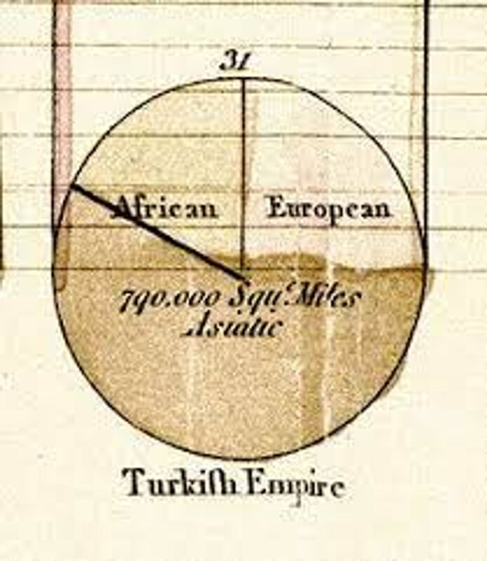
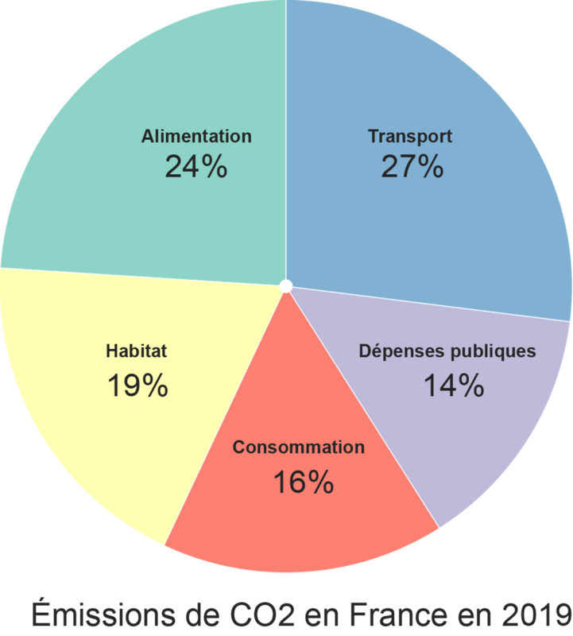
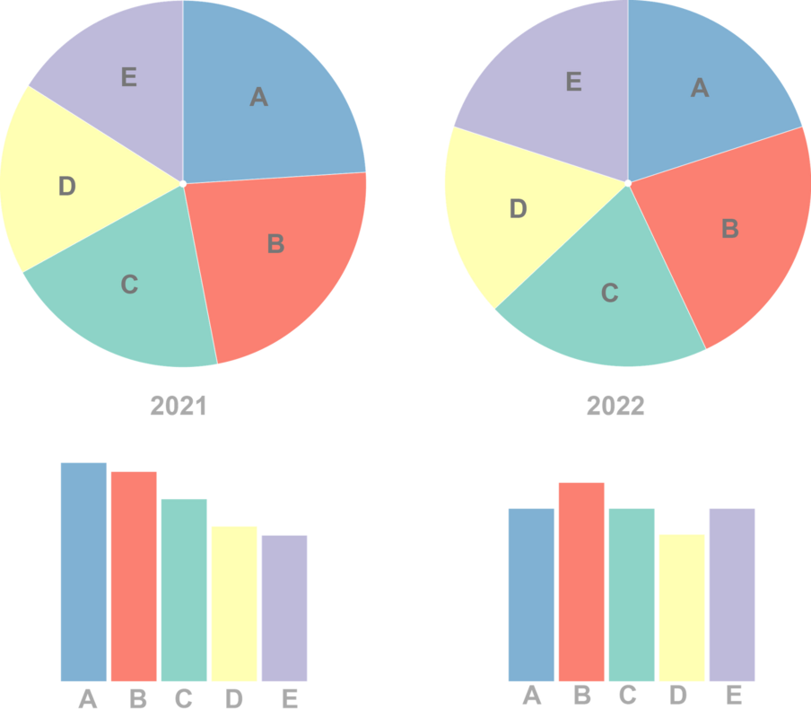
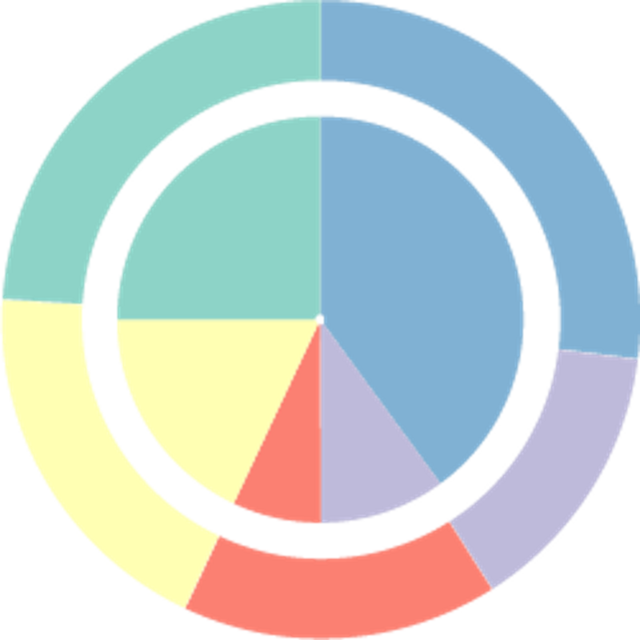
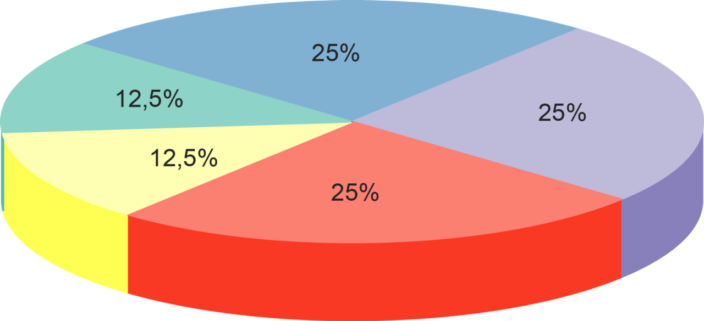

Historique
Les premiers diagrammes sectoriels, appelés aussi camemberts, sont apparus dans “The Statistical Breviary”, écrit par William Playfair en 1801 afin d’illustrer différentes statistiques sur les empires du 19ᵉ siècle.
Diagramme à secteurs de William Playfair.
Diagrammes circulaires publiés par William Playfair dans The Statistical Breviary (1801).
Diagramme montrant les proportions de l’empire Ottoman en Asie, Europe et Afrique avant 1789.
![Les cercles représentent la superficie de chaque pays. Les lignes à gauche de chaque cercle représentent la population (en millions d'habitants) et les lignes à droite représentent le total des taxes collectées (en millions de livres sterling). La ligne pointillée met en relation la ligne des revenus et la ligne des taxes. La pente de cette ligne n’a pas de signification mais son signe en a une en mettant en évidence le poids de l”impôt. Le graphique montre qu'en Grande-Bretagne, le total des taxes comparé à la population est plus élevé que dans les autres pays.](images/96b95218-22a5-46ec-85a0-ee624a621b3e_Untitled.png)
- Chronologie de l’histoire de la dataviz.
Pourquoi des diagrammes sectoriels ?
Les diagrammes sectoriels ont bien des limitations et pourtant, malgré les alternatives possibles, ils restent toujours très largement (mal) utilisés.
Pourquoi les utiliser?

- Comparer des valeurs entre plusieurs catégories.
- Représenter les parties d’un tout.
- C’est un diagramme que tout le monde sait lire.
- Il est bien adapté pour présenter des portions (les secteurs) d’un tout (le cercle - la somme des secteurs = 100 %).
- à la condition de ne pas dépasser 4 à 5 secteurs.
Pourquoi ne pas les utiliser?
- Différentier les tailles des secteurs est difficile ⇒ Utiliser plutôt des diagrammes à barres verticales ou horizontales.

- Ou utiliser un diagramme en pente (slopegraph).

Le diagramme sectoriel et ses variantes
Camembert (Pie chart)

En anneau (Donut chart)

Avantage
- possibilité de mettre un titre, un autre graphique, une image ou un commentaire dans la partie centrale.
Hémicycle (Arc)

Avantage
- Très utilisé pour représenter la répartition de sièges d’une assemblée, des résultats de sondages…
Combiné (combined pie chart)

Avantage
- La superposition de 2 diagrammes permet de comparer plus facilement deux diagrammes (peu utilisé).
Recommandations
Les données
- Des catégories (pas plus de 4 à 5 catégories - pensez à regrouper toutes les autres catégories).
- Des nombres positifs uniquement.
- Pas de zéro ou de minuscules valeurs.
- Le total fait 100 %.
Recommandation 1
- Respecter l’ordre des secteurs

Recommandation 2
- Pas de légendes sur le côté - c’est difficile à lire !

- Utilisez cette alternative si les légendes ne peuvent pas être placées dans les secteurs.

Recommandation 3
- Pas de 3D - Le secteur mis à l’avant est perçu plus grand et cela trompe la perception du lecteur.

Recommandation 4
- Les couleurs ne sont pas toujours nécessaires. Les utiliser avec prudence parce qu’elles véhiculent des symboles.

- Colorer un secteur (et le décaler éventuellement) pour mettre en avant une information à retenir.

Testez par vous-même
Outils
Sélection d’outils
Nous vous proposons des diagrammes, des variantes et des lignes directrices, mais peut-on les mettre en œuvre concrètement avec les outils graphiques ?
La liste des logiciels de visualisation de données est longue et en faire une analyse exhaustive serait fastidieuse et peu pratique à utiliser. Nous avons choisi quelques outils connus, facile d’accès pour des débutants et qui permettent d’exporter les graphiques dans un format vectoriel SVG (sauf pour l’outil Tableau Software).
Dans ce format, les diagrammes se composent d’un ensemble d’objets graphique (polygones, lignes, cercles et textes) qu’il est possible d’importer dans des outils de présentation tels que PowerPoint, Draw ou des outils vectoriels dédiés comme Illustrator ou son équivalent libre Inkscape. Il est alors possible de faire manuellement des modifications qui ne sont pas ou difficilement réalisables avec l’outil de dataviz.
Exemples
Les exemples qui sont proposés présentent des réalisations basiques. Pensez à sélectionner l’onglet correspondant au diagramme sectoriel.
EXCEL
En savoir +
- Tous les types de diagrammes à secteurs sont réalisables (n’hésitez pas à regarder des tutoriels pour les construire si besoin).
- Pour transférer un graphique au format SVG, sélectionnez le graphique dans l’onglet puis faire un copier-coller vers l’outil de dessins vectoriels ou de présentation.
GOOGLE SHEET (on line)
En savoir +
- Tous les types de diagrammes à secteurs sont réalisables (n’hésitez pas à regarder des tutoriels pour les construire si besoin).
- Pour transférer un graphique au format SVG, sélectionnez le graphique dans l’onglet puis en haut à droite du graphique, cliquez sur l’icone puis télécharger au format SVG.

TABLEAU SOFTWARE
Le site Tableau public propose de nombreux exemples de réalisation de diagrammes sectoriels
En savoir +
- L’outil Tableau ne propose pas d’exportation au format SVG mais au format PDF. Dans ce format, avec les outils vectoriels, l’extraction des formes du graphique reste possible mais pas très pratique.

CALC OpenOffice Exemple OpenOffice Calc
En savoir +
- Tous les types de diagrammes sectoriels sont réalisables (n’hésitez pas à regarder des tutoriels pour les construire si besoin).
- Pour transférer un graphique au format SVG, sélectionnez le graphique dans l’onglet puis faire un copier-coller vers l’outil de dessins vectoriels ou de présentation.

RAWgraph (on line) Exemples Raw Graph
En savoir +
- Cet outil en ligne simple ne permet pas de réaliser tous les types de diagrammes à secteurs.
- Sa simplicité d’utilisation et sa fonction d’exportation au format SVG le place comme une possible alternative à des outils plus complexes comme les tableurs.
Les langages de programmation
Sachez enfin, qu’avec les librairies graphiques associées aux langages de programmation R, Python ou JavaScript, il est possible de réaliser tous les diagrammes et les recommandations.
Liens vers le code de diagrammes basiques :
JavaScript Observablehq (1)
R (R Graph Gallery)(2),
Python (Python Graph Gallery)(2),
JavaScript d3.js (d3.js Graph Gallery)(2) .
(1) Notebooks observablehq de l’association TDV.
(2) Site de Yan Holtz (en anglais) et
Le site The Data Visualization Catalogue propose aussi des exemples réalisés avec de multiples outils ou langages de programmation (en anglais).